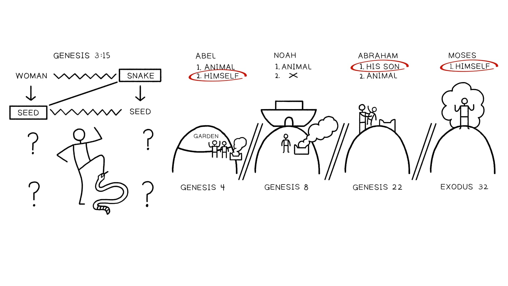

O sacrifício de Noé e a virada da vontade de Deus do juízo para a bênção generosa é um evento paradigmático na Bíblia Hebraica. Ele estabelece o molde para o drama que se desenrola conforme Deus continua a trabalhar com a semente da mulher, que reencenará o pecado de Adão e Eva, gerando conflito que leva à violência e a um dilúvio de juízo divino, criando uma crise última de decisão. A humanidade entregará o que é mais precioso a fim de liberar bênção divina no mundo?Noah's sacrifice and the turn of God's will from judgment to generous blessing is a paradigmatic event in the Hebrew Bible. It sets the template for the unfolding drama as God continues to work with the seed of the woman, which will replay Adam and Eve's sin, generating conflict that leads to violence and a flood of divine judgment, creating an ultimate crisis of decision. Will humanity surrender what is most precious in order to release divine blessing into the world?
"Assim como a desobediência é decisiva na perda de vida em Gênesis 3, assim a obediência ao mandamento é decisiva em Gênesis 12:1-3 e na história do dilúvio. A justiça de Noé em 6:8-9 é uma realidade futura que se torna atual somente quando Noé a realiza por sua obediência 'diante de Yahweh' (7:1). Quando foi efetuada esta justiça? [A]o fim do dilúvio quando a sobrevivência de Noé é primeiramente assegurada. Noé torna-se em virtude da aceitação de seu sacrifício um tsaddiq em relação a Yahweh. Aqui também a razão para a justiça de Noé torna-se clara: ... não simplesmente para a salvação da família imediata de Noé, mas a salvação de toda humanidade e seres vivos. Assim como Abraão recebeu em Gênesis 12:1-3 um mandamento seguido de uma promessa que incorpora um mandamento adicional de ser uma bênção para todos os povos, assim Noé recebeu um mandamento seguido de uma promessa que implica que ele funciona como um tsaddiq para a salvação da humanidade." Clark, W. Malcom (1971). "The Righteousness of Noah". Vetus Testamentum, 21 (3). 273-274."As disobedience is decisive in the loss of life in Genesis 3, so obedience to the command is decisive in Genesis 12:1-3 and in the flood story. Noah's righteousness in 6:8-9 is a future reality that becomes actual only as Noah realizes it by his obedience 'before Yahweh' (7:1). When was this righteousness effected? [A]t the end of the flood when Noah's survival is first assured. Noah becomes by virtue of the acceptance of his sacrifice a tsaddiq in relationship to Yahweh. Here also the reason for the righteousness of Noah becomes clear: ... not simply for the salvation of Noah's immediate family, but the salvation of all humanity and living things. As Abraham received in Genesis 12:1-3 a command followed by a promise which incorporates a further command to be a blessing for all peoples, so Noah received a command followed by a promise that implies he functions as a tsaddiq for the salvation of humanity." Clark, W. Malcom (1971). "The Righteousness of Noah". Vetus Testamentum, 21 (3). 273-274.
"Mas não é simplesmente que um ato extraordinário de obediência por um homem justo [Abraão] leva a bênção extraordinária. É que a obediência de um homem culmina em um ato de sacrifício e assim leva a bênção extraordinária ... A obediência fiel de Noé culminando em seus sacrifícios após o dilúvio mudou a disposição de Deus para com a humanidade pecadora. Similarmente a obediência de Abraão garantiu o futuro de seus descendentes e que por meio deles bênção viesse a todas as nações." Wenham, Gordon (1997). "The Akedah: A Paradigm of Sacrifice." Journal of Biblical Literature, 116 (3). 102."But it is not simply that an extraordinary act of obedience by a righteous man [Abraham] leads to extraordinary blessing. It is that one man's obedience climaxes in an act of sacrifice and thus leads to extraordinary blessing ... The faithful obedience of Noah culminating in his sacrifices after the flood changed God's disposition toward sinful humanity. Similarly Abraham's obedience guaranteed the future of his descendants and that through them blessing should come to all nations." Wenham, Gordon (1997). "The Akedah: A Paradigm of Sacrifice." Journal of Biblical Literature, 116 (3). 102.
A promessa em Gênesis 3:15 — de uma semente da mulher que triunfará sobre a serpente mas será ferida no processo — estabelece o esboço para um padrão de compromisso custoso que se desenvolve pelo resto de Gênesis e dentro de Êxodo.The promise in Genesis 3:15—of a seed of the woman who will triumph over the snake but be struck in the process—sets the outline for a pattern of costly commitment that develops throughout the rest of Genesis and into Exodus.
A cada iteração do padrão, vemos pequenas diferenças que começam a esboçar o retrato de um escolhido que virá e dará sua própria vida em favor dos muitos.With each iteration of the pattern, we see small differences that begin to sketch the portrait of a chosen one who will come and give his own life on behalf of the many.
O Padrão de Design do Sacrifício no Lugar Alto. Ilustração criada por Tim Mackie para BibleProject Classroom: Noé a Abraão (2020).The Design Pattern of the High Place Sacrifice. Illustration created by Tim Mackie for BibleProject Classroom: Noah to Abraham (2020).
Como você descreveria o modo como este padrão de sacrifícios no lugar alto conduz em última análise à antecipação do auto-entrega, sacrifício expiatório de Jesus?How would you describe the way that this pattern of high place sacrifices ultimately leads to the anticipation of Jesus' self-giving, atoning sacrifice?
